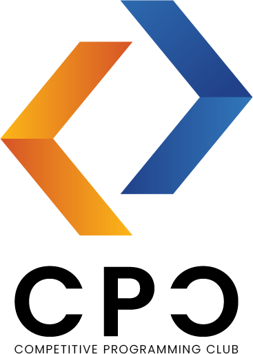
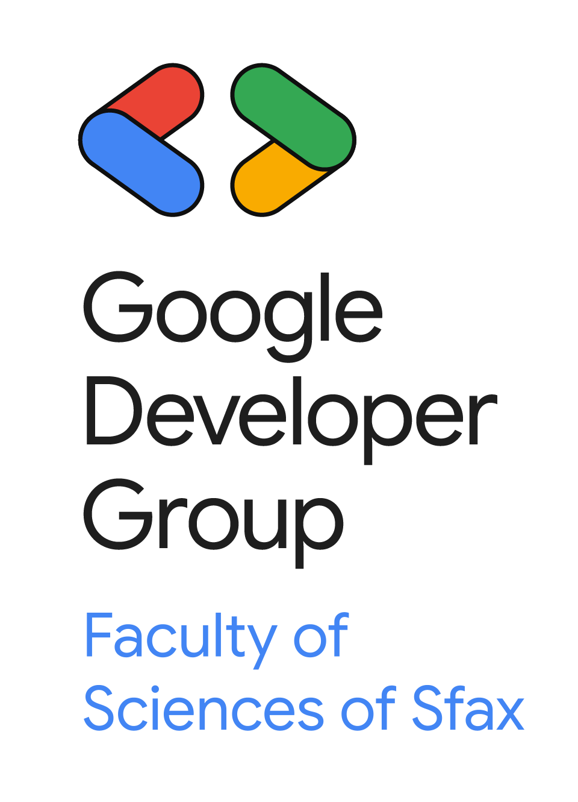

Who Are We?
A collaboration of leading academic and professional organizations
Computer Science and Communications Department
Founded in 1987
The Computer Science and Communications Department at the Faculty of Sciences of Sfax (FSS) was established with the creation of the faculty in 1987 (originally as the Computer Science Department) and currently has over 36 years of nationally and internationally recognized experience as one of the preferred destinations for ambitious students to acquire advanced skills in computer science and new technologies. The department helps students achieve their scientific and professional goals. Faculty members encourage innovation, creativity, and knowledge exchange. The department's academic and industrial partnerships at national and international levels represent an advantage for obtaining the best employment opportunities and startup development for students.

IEEE FSS Student Branch
Founded in 2017
Founded in 2018, IEEE FSS SB is a vibrant community with over 250 members and 13 active chapters. We connect the university with the professional world, bridging academic knowledge and real-world experience. Our mission is to foster innovation and entrepreneurship through projects, competitions, and workshops.

Competitive Programming Club (CPC)
Established in 2022
The Competitive Programming Club (CPC) at the Faculty of Sciences of Sfax was established in 2022 to cultivate algorithmic excellence and competitive programming culture. Our mission is to develop world-class competitive programmers while fostering a collaborative learning environment that bridges academic theory with industry-demanded problem-solving skills.

GDG on Campus FSS
Google Developer Groups
Google Developer Groups On Campus is a university-based community group for students interested in Google development technologies. It is a place where students can grow as developers, from beginner to advanced levels, while learning alongside peers who share the same passion.